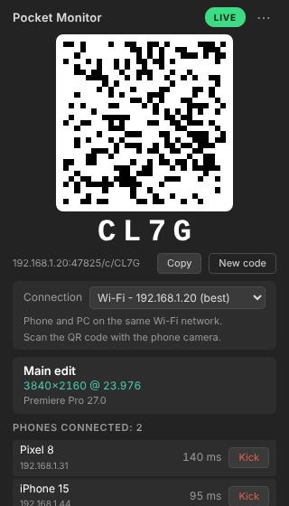

See your edit & canvas live on your phone.
Pocket Monitor turns any phone or tablet on your Wi-Fi into a real-time second monitor for Premiere Pro, After Effects, and Photoshop. Check framing, captions, social overlays, and colour on the screen your audience actually uses — with no phone app, no cables, and no exports.
Free & open source · Version · 100% local on your Wi-Fi
What it looks like




Built for real editors & designers
Live playback + sound
Streams Premiere Pro and After Effects frames in real time (H.264 over WebRTC with JPEG fallback) plus synced Premiere audio on your phone speaker.
Photoshop live canvas
Updates your phone automatically as you paint, tweak typography, or adjust colour — with sRGB and Display P3 ICC profile tagging.
Social frames & safe zones
Instagram Reels/Feed/Story, TikTok, YouTube Shorts, X, and more. Toggle between realistic UI preview and hatched Safe zones.
Scopes & guides
Histogram, waveform, vectorscope, audio meters, false colour, zebras, rule of thirds, and cinema mattes — all rendered on the phone.
Run Premiere & Photoshop together
Video (port 47825) and Photoshop (port 47823) run as completely separate helpers, so both apps can stay open with zero conflicts.
100% private & local
Frames go straight from your PC to your phone over your own Wi-Fi, hotspot, or USB tether. No account, no cloud server, no watermark.
Install in 3 easy steps
Run the Windows installer
Close Premiere Pro, After Effects, and Photoshop. Download and run PocketMonitorSetup.exe and click Yes when Windows asks.
Open the panel in Adobe
Premiere / AE: Window › Extensions › Pocket Monitor (and tick Pocket Monitor in Preferences › Playback / Video Preview once).
Photoshop: Plugins › Pocket Monitor (no extra setup).
Scan the QR code
Point your phone camera at the QR code. No app to install — it opens right in Safari or Chrome. Tap Frame, Scopes, or Sound.
Free & Pro Editions
The core app is free and open source under GPLv3 forever. Pro funds code-signing, macOS support, and upcoming studio features.
Open Source
- Live Premiere Pro, After Effects & Photoshop preview
- Synced Premiere timeline audio
- Social frames (UI preview + Safe zones)
- Scopes, guides & phone playback controls
- Full GPLv3 source code on GitHub
1-Click Installer
- Everything in Free
- 1-click Windows installer download on Gumroad
- Automatic updates for this release line
- Directly supports ongoing development
Pocket Monitor Pro
- Everything in Free + 1-click installer
- Code-signed Windows installer (no SmartScreen warning, upcoming)
- macOS version when released
- Upcoming Pro features: custom brand/client presets, multi-client review links & LUT preview
Requirements
- PC: Windows 10 or 11 (64-bit) — macOS planned
- Adobe apps: Premiere Pro 2024+, After Effects 2024+, or Photoshop 2023 (24.0)+
- Phone / tablet: Any modern browser on the same Wi-Fi, hotspot, USB tether, or Tailscale
Your video and artwork never leave your local network. Read privacy details · Troubleshooting.